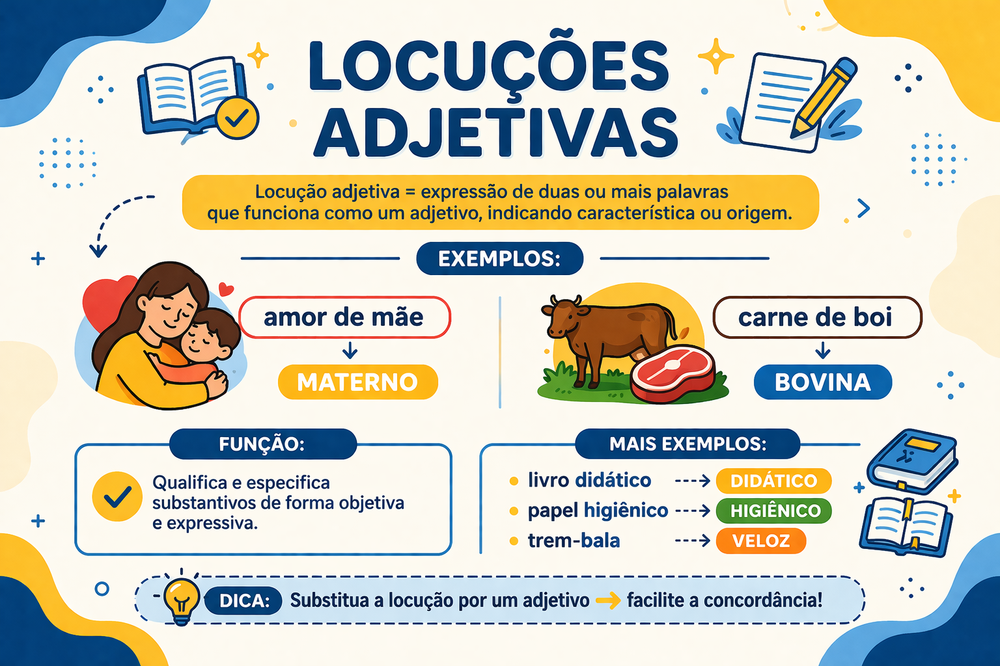

Locuções adjetivas: o que são, exemplos e diferenças
As locuções adjetivas são expressões que apresentam valor adjetivo e ajudam a caracterizar ou especificar substantivos. Em “mesa de madeira”, por exemplo, de madeira informa o material da mesa.
Essas expressões podem indicar origem, matéria, finalidade, pertencimento e outras relações. Algumas possuem adjetivos correspondentes, como “água da chuva” e “água pluvial”; outras não apresentam uma substituição usual em uma única palavra.
Neste guia, você aprenderá a reconhecer sua estrutura, interpretar seus sentidos, distingui-las de locuções adverbiais e evitar classificações baseadas apenas na presença de uma preposição.

O que é uma locução adjetiva?
Na abordagem escolar, a locução adjetiva é uma expressão formada por duas ou mais palavras que desempenha um papel semelhante ao de um adjetivo.
O termo adjetiva indica seu valor de caracterização ou especificação. Isso não significa que cada palavra da expressão pertença à classe dos adjetivos.
O artesão produziu uma mesa de madeira.
- Substantivo caracterizado: mesa.
- Locução adjetiva: de madeira.
- Estrutura: preposição “de” + substantivo “madeira”.
- Relação de sentido: matéria de que a mesa é feita.
Uma locução adjetiva não precisa expressar uma qualidade subjetiva, como beleza ou bondade. Ela também pode classificar o substantivo por material, origem, uso ou pertencimento.
Qual é a estrutura das locuções adjetivas?
Uma estrutura frequente é preposição + substantivo. A expressão pode incluir artigos, adjetivos e outros elementos.
- mesa de madeira;
- dia de chuva;
- anel de ouro;
- roupa de inverno;
- criança com medo;
- pessoa sem paciência;
- mesa de madeira maciça.
Em “mesa de madeira”, a locução é apenas de madeira. O substantivo mesa é o termo caracterizado, não um componente da própria locução.
Preposições e contrações
A preposição pode aparecer combinada com um artigo: do corresponde a “de + o”; da, a “de + a”; dos e das incluem artigos no plural.
A fotografia da cidade foi exposta.
A expressão contém “de + a”. Sua interpretação depende do contexto: pode indicar, por exemplo, a cidade retratada. A contração, sozinha, não determina a classificação sintática.
Que sentidos as locuções adjetivas podem expressar?
| Relação de sentido | Exemplo | Interpretação |
|---|---|---|
| Matéria | Anel de ouro | Material de que o anel é feito. |
| Origem | Produto do Maranhão | Procedência do produto. |
| Finalidade | Roupa de inverno | Uso associado a uma estação. |
| Pertencimento | Caderno da professora | Na leitura de posse, identifica a quem pertence o caderno. |
| Característica | Pessoa sem paciência | Caracterização pela ausência de paciência. |
| Relação temporal | Passeio da manhã | Especificação do passeio por sua associação à manhã. |
Esses sentidos não constituem uma lista fechada. Uma mesma preposição pode introduzir relações diferentes: “anel de ouro”, “produto de Portugal” e “roupa de inverno” não expressam a mesma relação.
Locução adjetiva e adjetivo: qual é a diferença?
O adjetivo é uma palavra: materno, cardíaco, escolar. A locução adjetiva é uma expressão: de mãe, do coração, da escola, quando empregada com valor adjetivo.
Expressão com valor adjetivo
A escola organizou o calendário do ano.
Adjetivo correspondente no contexto
A escola organizou o calendário anual.
A aproximação entre os sentidos deve ser avaliada em cada enunciado. A existência de um adjetivo relacionado não garante que ele substitua a expressão em qualquer frase.
Exemplos de locuções adjetivas e adjetivos correspondentes
| Expressão | Correspondência possível | Exemplo contextualizado |
|---|---|---|
| De mãe | Materno | Carinho de mãe → carinho materno. |
| De pai | Paterno | Afeto de pai → afeto paterno. |
| Do coração | Cardíaco | Músculo do coração → músculo cardíaco. |
| Da boca | Bucal | Higiene da boca → higiene bucal. |
| Do nariz | Nasal | Cavidade do nariz → cavidade nasal. |
| Da chuva | Pluvial | Água da chuva → água pluvial. |
| Do rio | Fluvial | Transporte pelo rio → transporte fluvial. |
| Da cidade | Urbano | População da cidade → população urbana. |
| Do campo | Rural | População do campo → população rural. |
| De guerra | Bélico | Material de guerra → material bélico. |
| De anjo | Angelical | Aparência de anjo → aparência angelical. |
| De sonho | Onírico | Universo de sonho → universo onírico. |
A tabela apresenta aproximações lexicais contextualizadas. “Do rio” e “fluvial”, por exemplo, não são substitutos automáticos: em “a água daquele rio”, a referência a um rio específico pode ser perdida se a expressão for trocada por “água fluvial”.
Por que a substituição pode alterar o sentido?
Camisa de João
Na leitura de posse, é uma camisa que pertence a João.
Camisa masculina
Classifica a camisa por uma categoria de uso ou de comercialização.
Não se pode substituir uma expressão por um adjetivo apenas porque há alguma associação entre seus significados. A relação específica do enunciado precisa ser preservada.
Toda locução adjetiva possui um equivalente em uma palavra?
Não. Expressões como relógio de parede, mesa de madeira e camisa de João não precisam apresentar um adjetivo usual que as substitua com a mesma precisão.
O reconhecimento do valor adjetivo depende do papel da expressão na construção. A substituição por uma palavra é um recurso de comparação, não uma condição obrigatória.
Também não é necessário trocar uma expressão clara por um adjetivo raro. A escolha deve considerar precisão, contexto e familiaridade do leitor com o vocabulário.
Locução adjetiva e locução adverbial: como diferenciar?
A diferença central está na relação estabelecida no enunciado. A locução adjetiva caracteriza ou especifica um substantivo. A adverbial pode acrescentar uma circunstância ao processo verbal ou modificar um adjetivo, um advérbio ou o enunciado.
Valor adjetivo
O passeio da manhã foi cancelado.
“Da manhã” especifica o substantivo “passeio”: identifica qual passeio foi cancelado.
Valor adverbial
Os estudantes passearam de manhã.
“De manhã” situa temporalmente o ato de passear.
A mesma expressão pode receber classificações diferentes?
Sim. Observe a expressão de ouro:
- O artesão produziu um anel de ouro. — Caracteriza “anel” pela matéria.
- O artesão revestiu a peça de ouro. — Integra a construção verbal “revestir algo de alguma coisa”; não deve ser classificada automaticamente como locução adjetiva.
A sequência de palavras pode ser igual, mas sua relação sintática muda. Por isso, listas de expressões não substituem a análise da frase.
Locução adjetiva e locução prepositiva são a mesma coisa?
Não. A locução adjetiva apresenta valor de caracterização ou especificação de um nome. A locução prepositiva funciona como elemento de ligação, semelhante a uma preposição.
- Uma casa de madeira. — “De madeira” caracteriza “casa”.
- Uma árvore em frente de casa. — “Em frente de” estabelece uma relação espacial e introduz “casa”.
A preposição de, isoladamente, também não é uma locução adjetiva. Em “casa de madeira”, o valor adjetivo pertence ao conjunto de madeira.
Qual é a função sintática da locução adjetiva?
Nos exemplos mais frequentes do ensino escolar, a locução adjetiva acompanha um substantivo dentro de um grupo nominal e exerce a função de adjunto adnominal.
As casas de madeira foram restauradas.
- Substantivo caracterizado: casas.
- Locução adjetiva: de madeira.
- Função sintática: adjunto adnominal de “casas”.
- Sujeito completo: as casas de madeira.
Locução adjetiva e adjunto adnominal não são termos intercambiáveis em todos os casos. O adjunto adnominal também pode ser realizado por artigo, pronome, numeral ou adjetivo, entre outras possibilidades.
Caracterização ligada ao nome e caracterização no predicado
Dentro do grupo nominal
A pessoa sem paciência interrompeu a conversa.
A expressão caracteriza “pessoa” dentro do sujeito, com função de adjunto adnominal.
No predicado
A pessoa estava sem paciência.
A expressão atribui um estado ao sujeito por meio de “estava”, exercendo função de predicativo do sujeito.
Expressões preposicionadas de valor caracterizador também podem aparecer no predicado. Em uma análise sintática, é necessário informar a função exercida na oração, além de reconhecer seu sentido.
Locução adjetiva e complemento nominal: cuidado com as generalizações
Nem toda expressão preposicionada ligada a um substantivo deve ser identificada como locução adjetiva com função de adjunto adnominal. Algumas completam o sentido de um nome e são analisadas como complemento nominal.
Caracterização por matéria
A mesa de madeira foi restaurada.
“De madeira” caracteriza o substantivo concreto “mesa” e funciona como adjunto adnominal.
Complementação de um nome
A necessidade de apoio era evidente.
“De apoio” completa o sentido de “necessidade” e é analisado como complemento nominal.
A pergunta “de quê?” não resolve a distinção, pois pode ser formulada nos dois exemplos. Também não basta verificar se o termo pode ser retirado: um complemento pode ser omitido quando seu conteúdo é recuperável pelo contexto.
Uma comparação com substantivo abstrato
- A crítica do jornalista foi publicada. — Na leitura em que o jornalista fez a crítica, o termo é tradicionalmente analisado como adjunto adnominal.
- A crítica ao projeto foi publicada. — O projeto é o alvo da crítica; o termo é analisado como complemento nominal.
A distinção entre agente e alvo pode ajudar com nomes que designam ações, mas não constitui um teste universal. Algumas construções são ambíguas, e diferentes abordagens gramaticais podem delimitar essas categorias de maneiras distintas.
Locução adjetiva e oração adjetiva
Ambas podem caracterizar um substantivo, mas apresentam estruturas diferentes. A oração adjetiva é organizada em torno de um verbo e, nas formas desenvolvidas, costuma ser introduzida por pronome relativo.
- Adjetivo: “Uma pessoa corajosa enfrentou a situação.”
- Locução adjetiva: “Uma pessoa de coragem enfrentou a situação.”
- Oração adjetiva: “Uma pessoa que tinha coragem enfrentou a situação.”
Os exemplos apresentam aproximação de sentido, mas não são idênticos em estrutura nem necessariamente em efeito expressivo. Na terceira construção, tinha organiza uma oração que caracteriza “pessoa”.
Como funciona a concordância?
A locução adjetiva não recebe, como bloco, as flexões do substantivo caracterizado. Compare:
- anel de ouro;
- anéis de ouro;
- casa de madeira;
- casas de madeira.
Já um adjetivo variável concorda com o substantivo: “carinho materno” e “atitudes maternas”.
Os elementos internos podem variar
Não se deve concluir que todas as palavras de uma locução são necessariamente invariáveis. Seu conteúdo pode exigir singular, plural e concordância interna.
- camisa de manga curta;
- camisa de mangas curtas;
- produtos de origem brasileira;
- produtos de origens diversas.
Em “de origens diversas”, o adjetivo “diversas” concorda internamente com “origens”. Não se trata de uma flexão da expressão inteira para acompanhar “produtos”.
Locuções adjetivas e ambiguidade
Uma expressão pode permitir mais de uma interpretação quando não está claro a qual termo se liga.
Vi a fotografia da professora de vestido azul.
“De vestido azul” pode caracterizar a professora retratada ou a professora a quem a fotografia pertence, dependendo da interpretação de “da professora” e do contexto.
Quando a intenção é informar que a professora foi fotografada usando o vestido, uma reformulação mais clara seria:
Vi a fotografia em que a professora aparece usando um vestido azul.
A revisão deve considerar as relações entre os termos. Acrescentar expressões descritivas pode aumentar a precisão, mas também pode produzir leituras concorrentes.
Como identificar uma locução adjetiva passo a passo?
- Localize a expressão: observe grupos frequentemente iniciados por preposição.
- Identifique o termo relacionado: a expressão caracteriza um substantivo ou se liga a outro elemento?
- Analise o sentido: há matéria, origem, pertencimento, finalidade ou outra caracterização?
- Verifique a função sintática: diferencie adjunto adnominal, complemento nominal e outras funções.
- Teste uma paráfrase: procure uma reformulação que preserve a relação, sem exigir um adjetivo único.
- Considere o contexto: uma sequência de palavras pode receber análises diferentes em frases diferentes.
Exemplo de análise completa
Os novos móveis de madeira chegaram ontem.
- Sujeito: os novos móveis de madeira.
- Núcleo do sujeito: móveis.
- Locução adjetiva: de madeira.
- Função da locução: adjunto adnominal de “móveis”.
- Relação semântica: matéria.
- Ontem: advérbio de tempo, relacionado à chegada.
A expressão “de madeira” ajuda a identificar os móveis. “Ontem” localiza o acontecimento no tempo. A diferença está na relação de cada elemento com a estrutura.
Erros frequentes no estudo das locuções adjetivas
- Incluir o substantivo caracterizado na locução: em “mesa de madeira”, a locução é “de madeira”.
- Exigir sempre um adjetivo equivalente: essa substituição nem sempre é usual ou precisa.
- Substituir sem observar o contexto: proximidade de sentido não significa equivalência em qualquer frase.
- Classificar toda expressão com “de” como adjetiva: a preposição também introduz outros tipos de termos.
- Confundir sentido e função sintática: uma expressão caracterizadora pode aparecer em estruturas diferentes.
- Confundir locução adjetiva e adverbial: observe se a relação é com um substantivo ou com o processo e o enunciado.
- Tratar a locução como inteiramente congelada: seus elementos internos podem variar conforme o sentido.
- Supor que palavras raras tornam o texto melhor: clareza e precisão devem orientar a escolha.
Quiz sobre locuções adjetivas
Marque uma alternativa por questão. Observe a expressão destacada, o termo a que ela se relaciona e o sentido no contexto.
1. Em “O artesão produziu uma mesa de madeira”, a locução adjetiva é:
2. Em qual alternativa a substituição preserva adequadamente a relação de sentido no contexto apresentado?
3. Compare “O passeio da manhã foi cancelado” e “Passeamos de manhã”. As expressões “da manhã” e “de manhã” apresentam, respectivamente:
4. Sobre a relação entre locução adjetiva e adjetivo, é correto afirmar que:
5. Em “As casas de madeira foram restauradas”, “de madeira” exerce a função de:
6. Em “A necessidade de apoio era evidente”, a expressão “de apoio”:
7. Em “Os produtos de origem brasileira foram expostos”, qual afirmação está correta?
8. Em qual alternativa a caracterização do substantivo é realizada por uma oração adjetiva desenvolvida?
9. Em “A pessoa estava sem paciência”, a expressão “sem paciência”:
10. Em “anel de ouro”, a expressão “de ouro” indica:
Resumo sobre locuções adjetivas
- São expressões de duas ou mais palavras com valor adjetivo.
- Caracterizam ou especificam substantivos.
- Frequentemente apresentam preposição seguida de substantivo.
- Podem indicar matéria, origem, finalidade, pertencimento e outras relações.
- Nem sempre possuem um adjetivo correspondente usual.
- As substituições devem preservar o sentido no contexto.
- Nos exemplos escolares mais frequentes, exercem função de adjunto adnominal.
- Nem toda expressão preposicionada ligada a um nome é adjunto adnominal.
- A diferença em relação à locução adverbial depende da relação estabelecida na frase.
- Os elementos internos da expressão podem variar conforme seu conteúdo.
Conclusão
Reconhecer locuções adjetivas exige observar como uma expressão caracteriza um substantivo e qual relação de sentido estabelece. A presença de uma preposição é uma pista estrutural, mas não resolve, sozinha, a classificação.
Ao ler ou revisar um texto, identifique o termo caracterizado, examine a função da expressão e verifique se uma eventual substituição preserva a informação. Esse procedimento ajuda a compreender diferenças de sentido e a construir descrições mais claras.
Perguntas frequentes sobre locuções adjetivas
O que é uma locução adjetiva?
É uma expressão de duas ou mais palavras que apresenta valor adjetivo, caracterizando ou especificando um substantivo, como “de madeira” em “mesa de madeira”.
Toda locução adjetiva possui um adjetivo correspondente?
Não. Algumas não possuem um equivalente usual em uma única palavra. Além disso, a substituição pode alterar o sentido, a precisão ou o registro.
Como diferenciar locução adjetiva e locução adverbial?
Observe a relação estabelecida no enunciado. A locução adjetiva caracteriza um substantivo; a adverbial acrescenta uma circunstância ou modifica o sentido de um verbo, adjetivo, advérbio ou do enunciado.
Toda expressão iniciada por “de” é uma locução adjetiva?
Não. A preposição “de” também introduz complementos verbais, complementos nominais e expressões adverbiais. A classificação depende da relação sintática e do sentido.
A locução adjetiva varia para concordar com o substantivo?
Ela não recebe, como bloco, as flexões do substantivo caracterizado. Em “casa de madeira” e “casas de madeira”, a expressão “de madeira” permanece igual. Seus elementos internos podem variar conforme o sentido.
Continue estudando Gramática
Referências e leituras de aprofundamento
- BECHARA, Evanildo. Moderna gramática portuguesa. Rio de Janeiro: Nova Fronteira.
- CUNHA, Celso; CINTRA, Lindley. Nova gramática do português contemporâneo. Rio de Janeiro: Lexikon.
- CEGALLA, Domingos Paschoal. Novíssima gramática da língua portuguesa. São Paulo: Companhia Editora Nacional.
- ROCHA LIMA, Carlos Henrique da. Gramática normativa da língua portuguesa. Rio de Janeiro: José Olympio.
Explore Outros Conteúdos
Continue seus estudos acessando outras seções do site Mestre Kira: